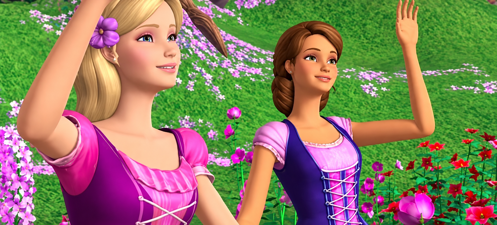
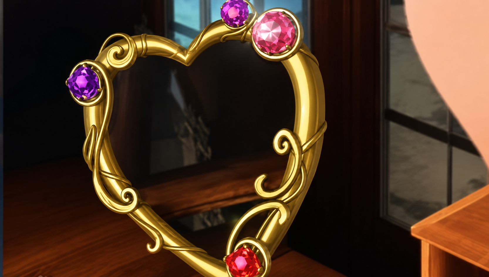
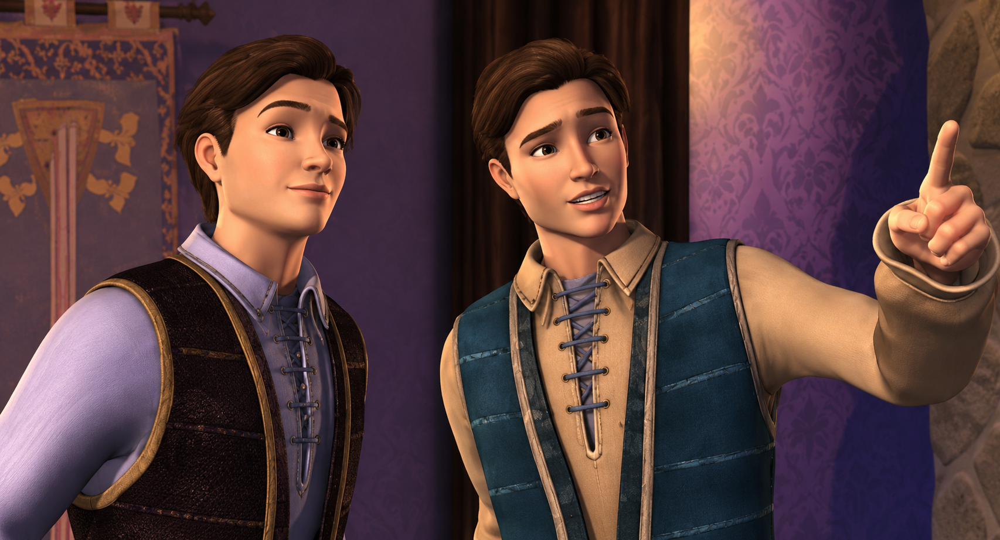
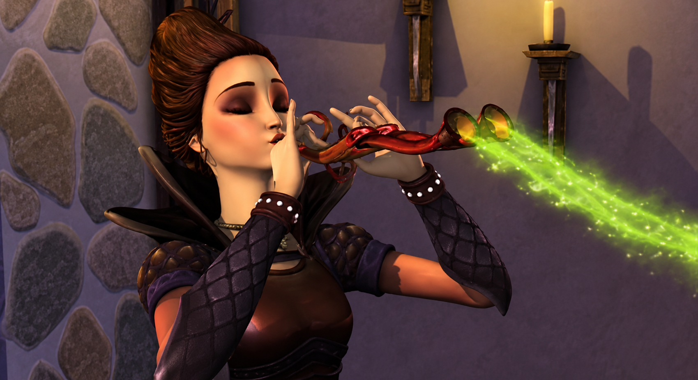
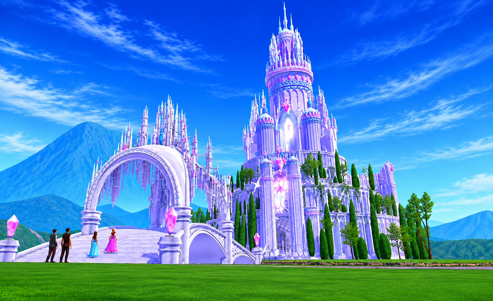
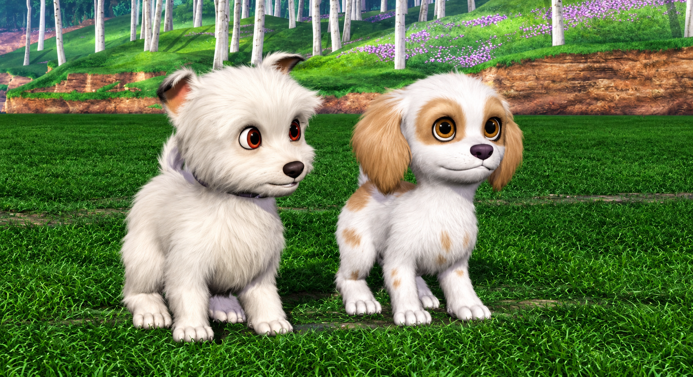

Gallery






Fun facts
- It was directed by Gino Nichele and produced by Rainmaker Entertainment and Mattel Entertainment.
- This is the first Barbie film to feature Stacie in place of Kelly.
- The song "Connected" is an English cover of "Tenerte y Quererte" by the Mexican pop group RBD.
- Liana and Alexa wear the same two dresses for most of the movie, which is unusual for a Barbie film.
- Ian and Jeremy joke in a song that nothing rhymes with orange.